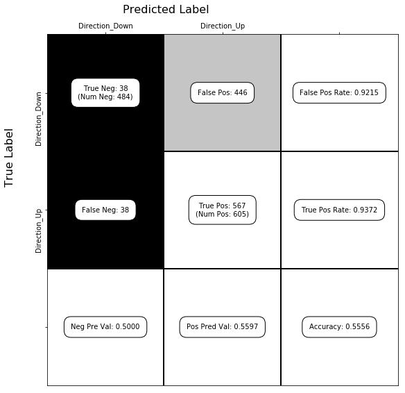

Exercise 5.7
import numpy as np
import pandas as pd
import seaborn as sns
from sklearn.linear_model import LogisticRegression
from sklearn.metrics import confusion_matrix
df = pd.read_csv("../data/Weekly.csv")
%matplotlib inline
df.head()
| Unnamed: 0 | Year | Lag1 | Lag2 | Lag3 | Lag4 | Lag5 | Volume | Today | Direction | |
|---|---|---|---|---|---|---|---|---|---|---|
| 0 | 1 | 1990 | 0.816 | 1.572 | -3.936 | -0.229 | -3.484 | 0.154976 | -0.270 | Down |
| 1 | 2 | 1990 | -0.270 | 0.816 | 1.572 | -3.936 | -0.229 | 0.148574 | -2.576 | Down |
| 2 | 3 | 1990 | -2.576 | -0.270 | 0.816 | 1.572 | -3.936 | 0.159837 | 3.514 | Up |
| 3 | 4 | 1990 | 3.514 | -2.576 | -0.270 | 0.816 | 1.572 | 0.161630 | 0.712 | Up |
| 4 | 5 | 1990 | 0.712 | 3.514 | -2.576 | -0.270 | 0.816 | 0.153728 | 1.178 | Up |
(a)
df['Direction_Up'] = (df['Direction'] == 'Up').astype(int)
df.head()
| Unnamed: 0 | Year | Lag1 | Lag2 | Lag3 | Lag4 | Lag5 | Volume | Today | Direction | Direction_Up | |
|---|---|---|---|---|---|---|---|---|---|---|---|
| 0 | 1 | 1990 | 0.816 | 1.572 | -3.936 | -0.229 | -3.484 | 0.154976 | -0.270 | Down | 0 |
| 1 | 2 | 1990 | -0.270 | 0.816 | 1.572 | -3.936 | -0.229 | 0.148574 | -2.576 | Down | 0 |
| 2 | 3 | 1990 | -2.576 | -0.270 | 0.816 | 1.572 | -3.936 | 0.159837 | 3.514 | Up | 1 |
| 3 | 4 | 1990 | 3.514 | -2.576 | -0.270 | 0.816 | 1.572 | 0.161630 | 0.712 | Up | 1 |
| 4 | 5 | 1990 | 0.712 | 3.514 | -2.576 | -0.270 | 0.816 | 0.153728 | 1.178 | Up | 1 |
X = df[['Lag1', 'Lag2']]
y = df['Direction_Up']
mod = LogisticRegression(C=10**6, tol=10**-7)
mod.fit(X, y)
LogisticRegression(C=1000000, class_weight=None, dual=False,
fit_intercept=True, intercept_scaling=1, max_iter=100,
multi_class='ovr', n_jobs=1, penalty='l2', random_state=None,
solver='liblinear', tol=1e-07, verbose=0, warm_start=False)
mod.intercept_, mod.coef_
(array([ 0.22122405]), array([[-0.03872222, 0.0602483 ]]))
def show_confusion_matrix(C,class_labels=['0','1']):
"""
C: ndarray, shape (2,2) as given by scikit-learn confusion_matrix function
class_labels: list of strings, default simply labels 0 and 1.
Draws confusion matrix with associated metrics.
Reference: http://notmatthancock.github.io/2015/10/28/confusion-matrix.html
"""
import matplotlib.pyplot as plt
import numpy as np
assert C.shape == (2,2), "Confusion matrix should be from binary classification only."
# true negative, false positive, etc...
tn = C[0,0]; fp = C[0,1]; fn = C[1,0]; tp = C[1,1];
NP = fn+tp # Num positive examples
NN = tn+fp # Num negative examples
N = NP+NN
fig = plt.figure(figsize=(8,8))
ax = fig.add_subplot(111)
ax.imshow(C, interpolation='nearest', cmap=plt.cm.gray)
# Draw the grid boxes
ax.set_xlim(-0.5,2.5)
ax.set_ylim(2.5,-0.5)
ax.plot([-0.5,2.5],[0.5,0.5], '-k', lw=2)
ax.plot([-0.5,2.5],[1.5,1.5], '-k', lw=2)
ax.plot([0.5,0.5],[-0.5,2.5], '-k', lw=2)
ax.plot([1.5,1.5],[-0.5,2.5], '-k', lw=2)
# Set xlabels
ax.set_xlabel('Predicted Label', fontsize=16)
ax.set_xticks([0,1,2])
ax.set_xticklabels(class_labels + [''])
ax.xaxis.set_label_position('top')
ax.xaxis.tick_top()
# These coordinate might require some tinkering. Ditto for y, below.
ax.xaxis.set_label_coords(0.34,1.06)
# Set ylabels
ax.set_ylabel('True Label', fontsize=16, rotation=90)
ax.set_yticklabels(class_labels + [''],rotation=90)
ax.set_yticks([0,1,2])
ax.yaxis.set_label_coords(-0.09,0.65)
# Fill in initial metrics: tp, tn, etc...
ax.text(0,0,
'True Neg: %d\n(Num Neg: %d)'%(tn,NN),
va='center',
ha='center',
bbox=dict(fc='w',boxstyle='round,pad=1'))
ax.text(0,1,
'False Neg: %d'%fn,
va='center',
ha='center',
bbox=dict(fc='w',boxstyle='round,pad=1'))
ax.text(1,0,
'False Pos: %d'%fp,
va='center',
ha='center',
bbox=dict(fc='w',boxstyle='round,pad=1'))
ax.text(1,1,
'True Pos: %d\n(Num Pos: %d)'%(tp,NP),
va='center',
ha='center',
bbox=dict(fc='w',boxstyle='round,pad=1'))
# Fill in secondary metrics: accuracy, true pos rate, etc...
ax.text(2,0,
'False Pos Rate: %.4f'%(fp / (fp+tn+0.)),
va='center',
ha='center',
bbox=dict(fc='w',boxstyle='round,pad=1'))
ax.text(2,1,
'True Pos Rate: %.4f'%(tp / (tp+fn+0.)),
va='center',
ha='center',
bbox=dict(fc='w',boxstyle='round,pad=1'))
ax.text(2,2,
'Accuracy: %.4f'%((tp+tn+0.)/N),
va='center',
ha='center',
bbox=dict(fc='w',boxstyle='round,pad=1'))
ax.text(0,2,
'Neg Pre Val: %.4f'%(1-fn/(fn+tn+0.)),
va='center',
ha='center',
bbox=dict(fc='w',boxstyle='round,pad=1'))
ax.text(1,2,
'Pos Pred Val: %.4f'%(tp/(tp+fp+0.)),
va='center',
ha='center',
bbox=dict(fc='w',boxstyle='round,pad=1'))
plt.tight_layout()
plt.show()
y_pred = mod.predict(X)
C = confusion_matrix(y, y_pred) # see exercise 5.5 for more on the confusion matrix
show_confusion_matrix(C, ['Direction_Down', 'Direction_Up'])

(b)
mod.fit(X, y)
print(mod.intercept_, mod.coef_, (mod.predict(X) == y).mean()) # accuracy
mod.fit(X.iloc[1:], y.iloc[1:])
print(mod.intercept_, mod.coef_, (mod.predict(X) == y).mean())
[ 0.22122405] [[-0.03872222 0.0602483 ]] 0.555555555556
[ 0.22324305] [[-0.03843317 0.06084763]] 0.556473829201
(c)
mod.predict([X.iloc[0]]), y[0]
(array([1]), 0)
This observation was not correctly classified.
(d)
n = len(X)
errors = np.zeros(n)
for i in range(n):
one_out = ~X.index.isin([i])
# i.
mod.fit(X[one_out], y[one_out])
# ii. iii. iv.
if mod.predict([X.iloc[i]]) != y[i]:
errors[i] = 1
(e)
errors.mean()
0.44995408631772266